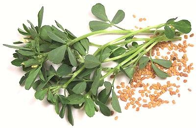

Fenugreek

[Methi (Hindi, Urdu, etc.);
Shanbalileh (Persia); Hilbeh (Arabic); Utakbo suneli (Georgia);
Trigonella foenum-graecum also T. cerulea]
This plant, a bean related to clover, has apparently been cultivated
for over 6000 years in the Middle East and was also well known to the
ancient Greeks and Egyptians. Both the aromatic seeds and the greens
are used.
In India, fenugreek seed is toasted and included in a number of
important masalas (spice mixes), and it is also used in the
cuisines of the Middle East, Persia and Greece. The fresh green leaves
and stems are used as an herb in these same regions, and dried
leaves in Georgia and India.
Fenugreek seed is also considered an important medicinal, particularly
for increasing lactation in nursing women.
More on Beans |
More on Herbs |
More Spices
In the United States the most important use for fenugreek seed is in
the production of artificial maple syrup, but both the greens and seeds
are important in the cuisines of Greece, Bulgaria, Anatolia, North
Africa, East Africa, the Middle East, the Indian Subcontinent and as far
as Southeast Asia.
Blue Fenugreek
, (Trigonella caerulea) is found in the
Alpine regions of Europe where it is used as an herb to flavor bread and
cheese. It is little known outside that area, except in Georgia (former
Soviet Republic of) where it is much used as a dried herb called
Utskho Suneli. This species is not quite as strong as the
T. foenum-graecum that is commonly available in North America,
but the substitution works well enough.
Buying:
Find the fresh herb in markets serving
Mediterranean, Middle Eastern, Persian or Indian communities. In the
San Fernando Vally it is usually sold as "Shambe" (a corruption of the
Persian) and in Artesia it's sold as "Methi" (Indian). Nowhere around
here is it sold as "Fenugreek". The seeds can be found on most well
stocked spice shelves and will usually be called "Fenugreek".
The Dried Herb
is rather rare (I know one market that has it),
but it is very easy to pick fresh leaves off the stems and dry them. If
you cannot find the the fresh herb, you can easily grow your own
from seeds (provided they are reasonably fresh).
bp_fenugz* 100110 - www.clovegarden.com
©Andrew Grygus - agryg@clovegarden.com - Photos
on this page not otherwise credited © cg1
- Linking to and non-commercial use of this page permitted